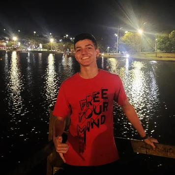
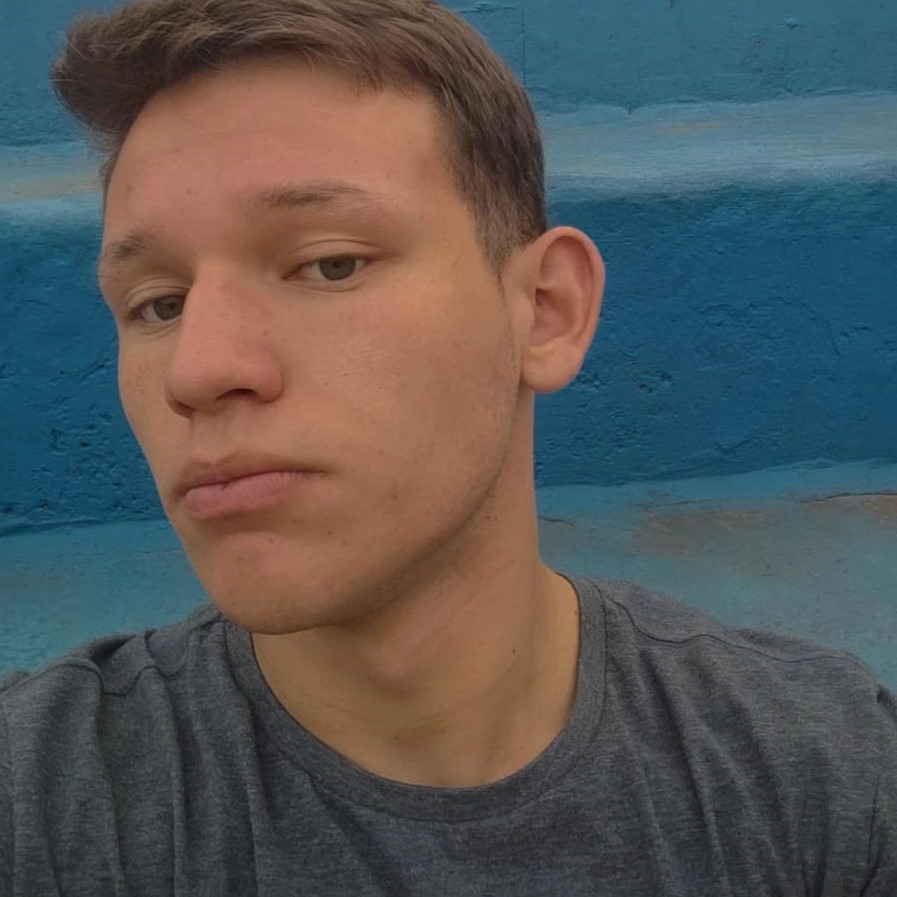
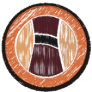
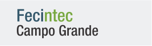
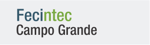

USO DE MATERIAIS RECICLÁVEIS COMO ALTERNATIVA PARA IMPRESSÃO 3D
REAPROVEITAMENTO DE GARRAFAS PET PARA USO EM IMPRESSÃO 3D
CADASTRE-SE
Saiba mais
Atualmente, a garrafa PET, cujo nome vem da sua composição - polietilenotereftalato, é uma resina termoplástica da mesma família do poliéster, que são polímeros, é abrangem dois tipos de resinas: o termofixa e a termoplástica. A resina termoplástica é um polímero artificial, que dependendo da temperatura, permite ser moldado. Esse material vem sendo muito utilizada por boa parte da população mundial, tanto em bebidas quanto em embalagens de alimentos. O material apresenta propriedades consideráveis para a utilização como leveza, baixa resistência mecânica e moldabilidade a baixa temperatura.Entretanto,a fabricação e o descarte inadequados fazem com que a garrafa PET represente efeitos nocivos para o meio ambiente e para a saúde humana. Podemos perceber isso ao vermos um estudo que comprova que 16,8% do lixo jogado no mundo é composto por polímeros e PETs, o que representa cerca de 13,8 bilhões de toneladas por ano (2022). Portanto, ao longo do tempo, a composição desse tipo de polímeros tem sido aprimorado de forma que não agrida o meio ambiente. Analisando aspectos de reciclagem, é preciso buscar um meio necessário para a realização desse processo para fins de reutilização do material, ou seja, a forma com que possa ser reciclado (PET) e com isso, evitando-se o descarte desnecessário no meio ambiente. A presente pesquisa visa o estudo da criação de um dispositivo feito por meio de impressão 3D, que aproveita garrafas do tipo PET, por meio da geração de filamentos para uso em impressora 3D. Este dispositivo também é conhecido como filetadeira.
Como Será Feito?
O projeto consiste basicamente na construção de uma filetadeira de garrafas PET, que ao usar uma lâmina com uma determinada força de tração sobre as garrafas, gera-se filetes. Este conceito é baseado no trabalho de Marques (2019). Inicialmente, foram elaborados desenhos do dispositivo em Solid Edge 2022 e AutoCAD 2020, que são disponibilizados na versão acadêmica para estudantes do Campus Campo Grande do IFMS. Além disso, foi usado o software online de desenhos para impressão 3D, Prusa Slicer. Com o objetivo de uma melhor avaliação do projeto, criou-se um protótipo feito por impressão 3D, utilizando-se as impressoras 3D do Campus Campo Grande. Foi escolhido um método de ação mecânica em determinada estrutura com dois ou mais rolamentos, por onde a garrafa pet passara sendo assim filetada por uma lâmina, transformando em filamentos de PET, ou o que chamamos de filetes.Quem somos?
-

João Leonel Pires
Cursa o 4º Semestre de Mecânica no Instituto Federal de Mato Grosso do Sul, atuando na pesquisa e desenvolvemento do projeto.
Ray Lopes Paré
Cursa o 4º Semestre de Mecânica no Instituto Federal de Mato Grosso do Sul, atuando na pesquisa e desenvolvemento do projeto.
Caio Nogueira Iseki Kugamgai
Cursa o 4º Semestre de Informática no Instituto Federal de Mato Grosso do Sul, atuando no desenvolvimento do site "ECOIMP".
.png)
Roberto Pereira Freitas Neto
Cursa o 4º Semestre de Informática no Instituto Federal de Mato Grosso do Sul, atuando no desenvolvimento do site "ECOIMP".
Anthony Hildebrand Chendrik
Cursa o 4º Semestre de Informática no Instituto Federal de Mato Grosso do Sul, atuando no desenvolvimento do site "ECOIMP".
Fabio Faria
Possui graduação em Engenharia da Computação, especialização em Docência e Licenciatura Pedagógica em História. Atualmente é professor efetivo no IFMS na área de Desenvolvimento/Desenvolvimento Web e membro do NEABI.É ativista em movimentos sociais e amante das artes, em especial, a música.
Naka
Professor de Mecânica no Instituto Federal de Mato Grosso do Sul, atuando como orientador do projeto.
Apoiadores
 
